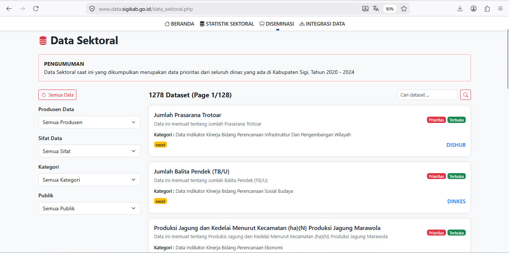
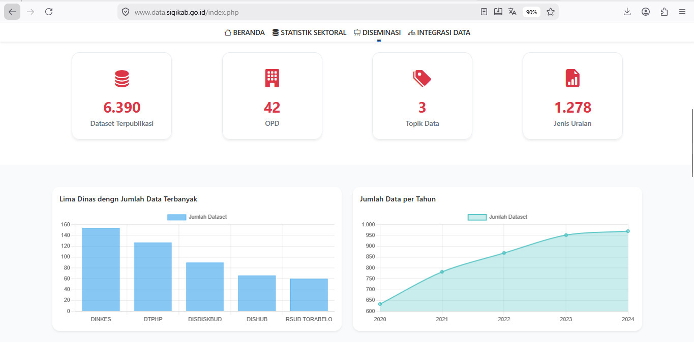
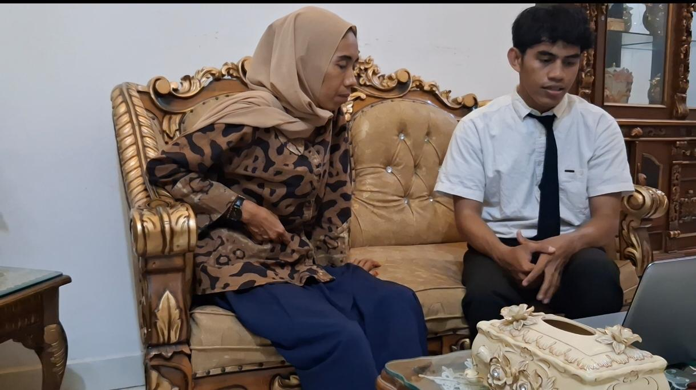
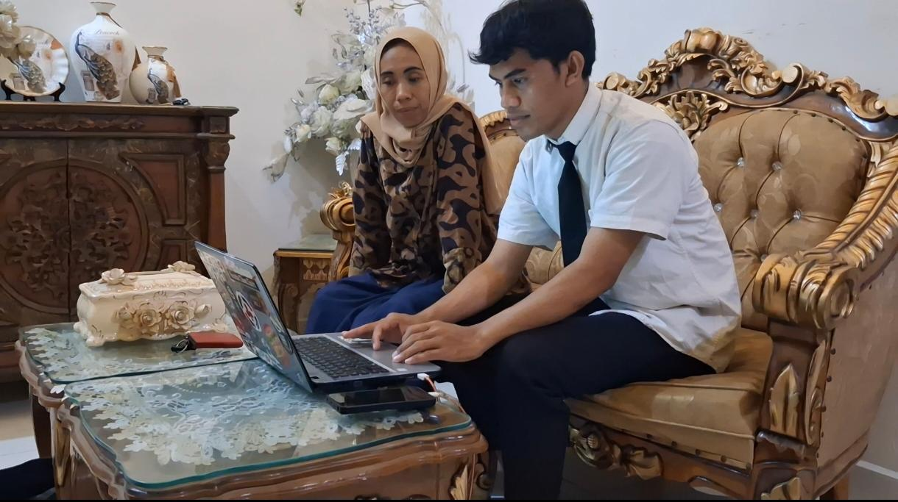
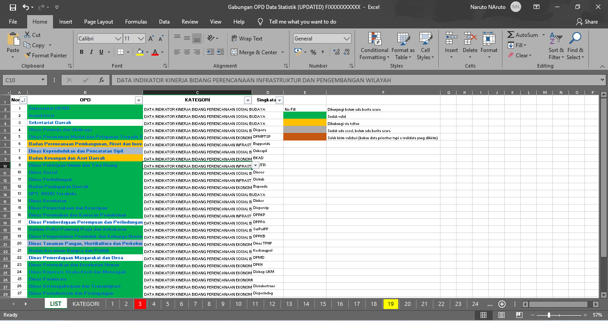
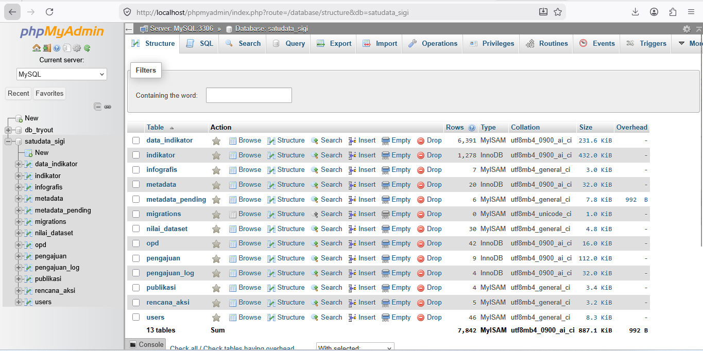
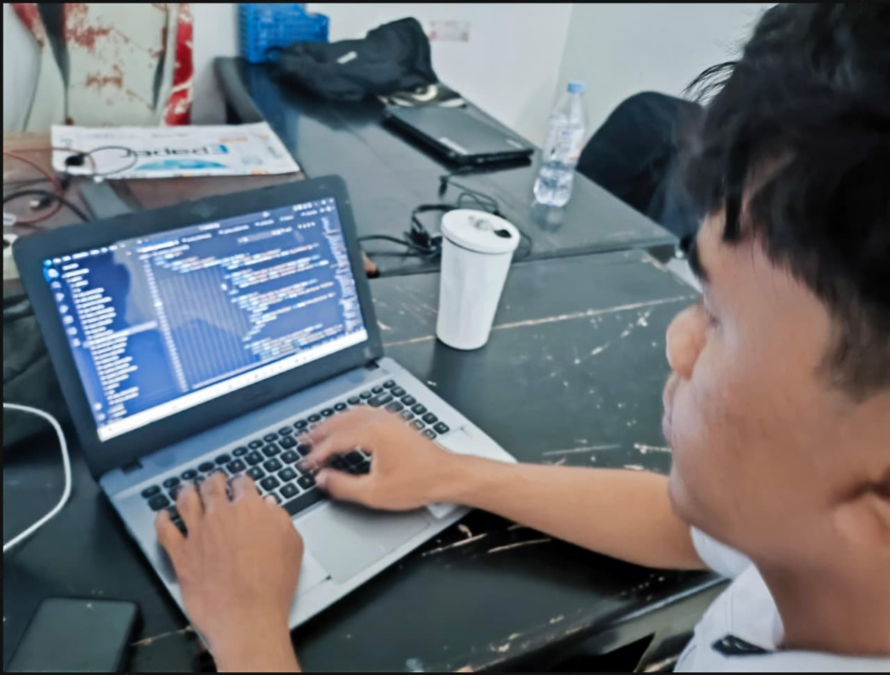
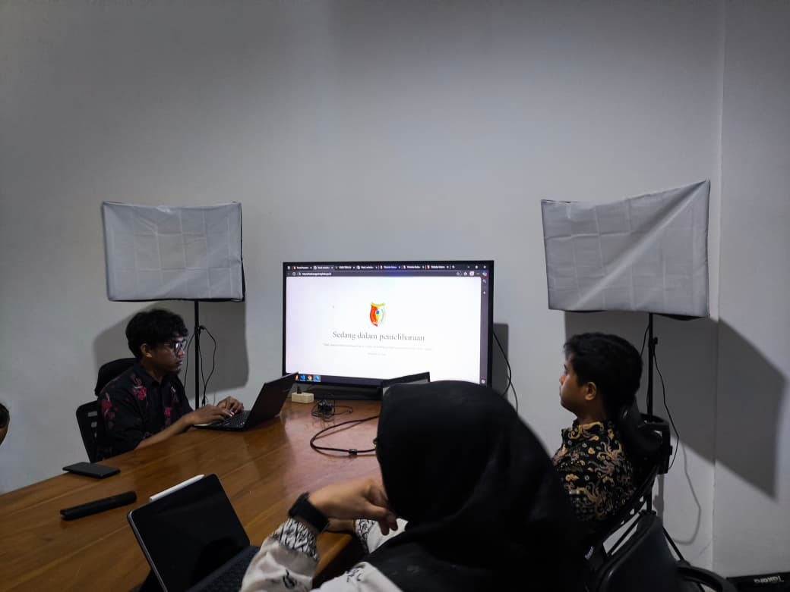
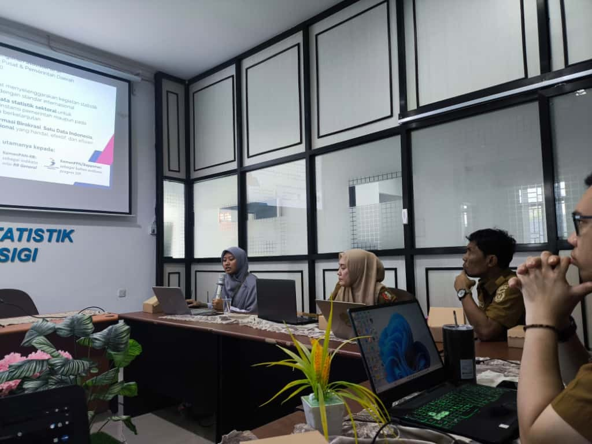
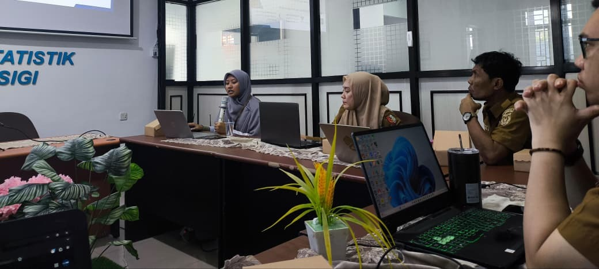

Sebagai Media Integrasi dan Diseminasi Data Sektoral untuk Mengoptimalisasi Peran E-Walidata pada Dinas Komunikasi dan Informatika Kabupaten Sigi
Pemerintah Indonesia tengah melakukan transformasi digital masif melalui kebijakan Satu Data Indonesia (SDI) sebagaimana diamanatkan dalam Peraturan Presiden Nomor 39 Tahun 2019. Kebijakan ini bertujuan menciptakan tata kelola data pemerintah yang akurat, mutakhir, terpadu, dan dapat dipertanggungjawabkan, serta mudah diakses dan dibagipakaikan antar-instansi.
Namun di Kabupaten Sigi, kondisi faktual masih jauh dari ideal. Pengumpulan data sektoral didominasi metode konvensional — surat-menyurat manual dan penyimpanan awan (Google Drive) yang terfragmentasi di berbagai unit kerja — tanpa standar metadata yang seragam. Ketiadaan wadah digital terpusat mengakibatkan fungsi integrasi dan aksesibilitas data menjadi lemah, serta kebijakan pembangunan tidak dapat sepenuhnya berbasis data yang andal.
Lahir di Tampaure, 26 Juni 2001. Lulusan S1 Statistika. Bertugas di Bidang Pengelolaan Informasi, Komunikasi Publik dan Persandian — Seksi Persandian & Statistik, Diskominfo Kabupaten Sigi. Bertanggung jawab dalam pengelolaan statistik sektoral, pengelolaan metadata, integrasi data, serta penguatan kapasitas informasi daerah untuk mendukung kebijakan pembangunan berbasis data.
| Identifikasi Isu | A | P | K | L | Total | Rank |
|---|---|---|---|---|---|---|
| Integrasi & Aksesibilitas Data Sektoral | 5 | 5 | 5 | 4 | 19 | I |
| Standar Metadata Data Sektoral | 4 | 4 | 3 | 5 | 16 | II |
| Visualisasi & Diseminasi Interaktif | 3 | 2 | 4 | 3 | 12 | III |










Keberhasilan portal ini bukan sekadar capaian aktualisasi — melainkan kontribusi nyata bagi terwujudnya pemerintahan yang transparan, inovatif, dan berbasis data di Kabupaten Sigi. Semangat inovasi dan kolaborasi yang terbangun selama masa habituasi diharapkan terus dipelihara demi kemajuan pelayanan publik dan kesejahteraan masyarakat Kabupaten Sigi.